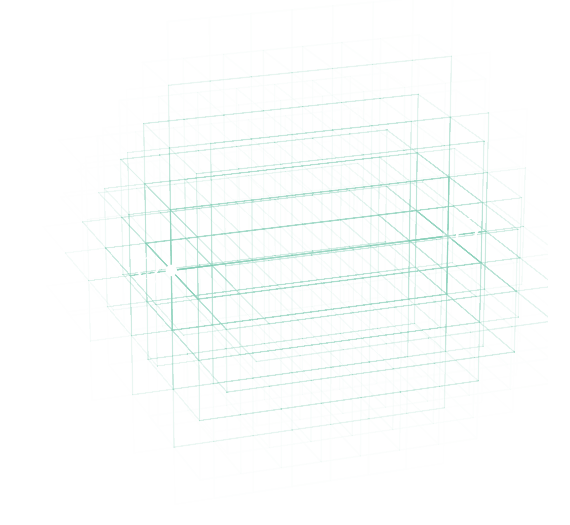

Research Interests
An up-to-date list of my publications can be found on Inspire.
I am broadly interested in theoretical high-energy physics and early-universe cosmology, and always happy to discuss any related topics. Currently, I focus on primordial black holes.
Primordial black holes
Primordial black holes are black holes that might have formed very soon after the Big Bang. Remarkably, they could explain all of dark matter without requiring a modification of the standard model of particle physics or general relativity.
More detailed information on my current research will be added here once the project has advanced to a later stage.

Undergraduate Research
Below you find brief descriptions of the research projects that I worked as an undergraduate.
Lattice QCD - A machine learning-based approach to optimizing lattice operators
In my third year of undergraduate, I spent one semester doing research on lattice QCD and machine learning for my undergraduate thesis.
The image on the right shows two static particles, whose positions are marked by white dots. The turquoise lines are Wilson lines that start at the position of the anti-quark and end at that of the quark. We used a neural network to find an optimized superposition of these Wilson lines, e.g. for the computation of the static quark-antiquark potential. You can read about the results here.

Epoch of Reionization - The Galaxy-Lyman-α cross-correlation in cosmological simulations
Publications: Paper 1 and Paper 2
As an undergraduate, I did a summer internship related to the Epoch of Reionization at the Max Planck Institute for Astrophysics. I continued working my internship project during the following academic year, and co-authored two papers (linked above).

Stellar Astrophysics - Exploring the connection between the chemical composition of the stellar atmosphere and planets around the star
In 2023, I did an undergraduate research internship in observational astrophysics at the Nicolaus Copernicus Astronomical Center in Warsaw. The project was about chemical abundances in the atmosphere of main sequence stars and how these might be related to the existence of planets around a star.